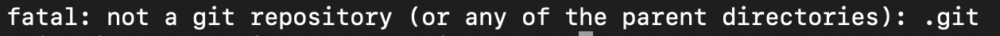
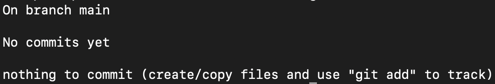
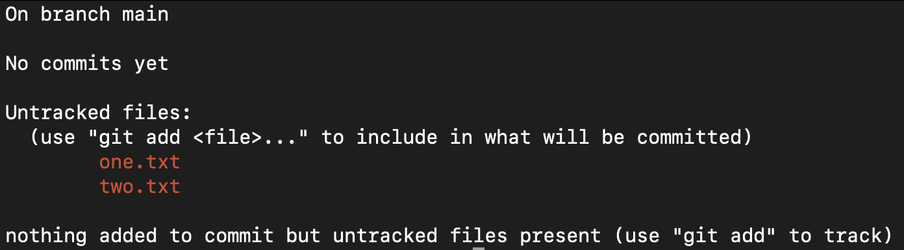
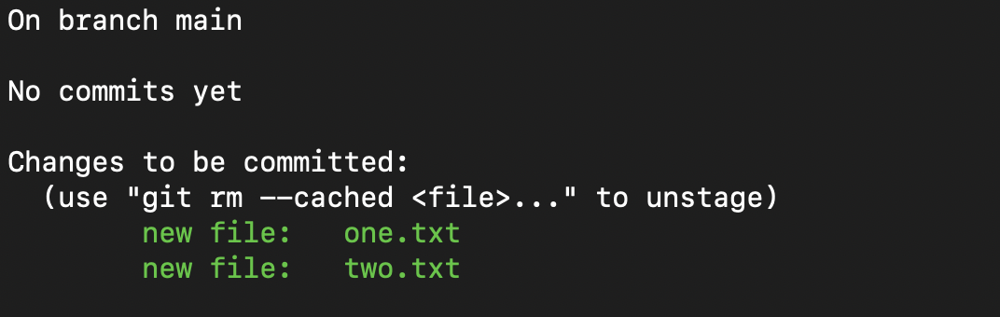
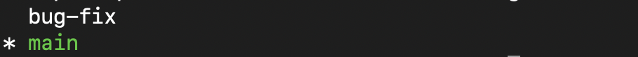
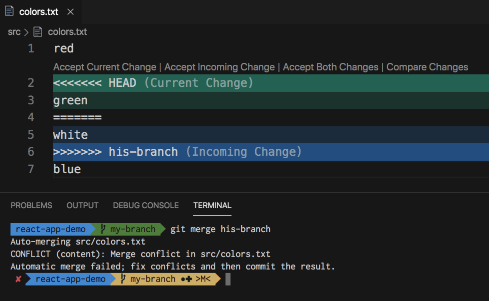

Git Explained
Imagine you work like normal, as usuall. However, in between your work, you can create checkpoints for you to go back to or rewind to your previous itteration of your work. That is version control!

As previously mention, Git is a software, do not get it confused with GitHub, in which we will learn about as well. Git is a software that you install in your local machine to use version control, and GitHub is a service provider to host your code remotely. They are different and yet they work together.
Let's Get Git
Click here to download git. It will redirect you to the official download page (Trust me bro).
Just follow the installation process. Don't worry, there's no way you can mess this up, right?? 👀
Done installing, what now?
Congrats 🎉
Now you have to open your terminal. But wait, you're not one of those pesky Windows user are you? Hmmm? Just kidding HaHa... But seriously, it works differently on Windows.
-
MacOS and Linux
Once you got Git installed, open your terminal. Don't know what a terminal is? Noprob. Go to your desktop search function and just type in terminal, and... Voilà.
It should look something like this ->

-
Windows
If you installed Git on Windows, Git Bash comes included as part of the Git For Windows package. Now, what the hell is Git bash?
Short answer, it is terminal for Windows for you to operate Git. Long answer, just look it up online bro, I ain't explaining you all dat. My goal is for you to simply understand, not complicatedly understand.
To launch Git Bash, open the Windows Start menu, type git bash, and press Enter (or click the application icon). It should look something like this ->

Check if Git is properly installed
To do that, just type in git --version on your respected terminal. If the version numbers showed up, that means you have successfully installed Git to your machine, congrats!
If not then you screwed up, man. Just try again, don't give up!!
Working in the Terminal
Terminal isn't that scary. Come on, I'll help you dip your toe on the terminal 🫱
To navigate your file structure in the terminal we use what's called the Linux Commands.
But I use MacOS. Doesn't matter. MacOS stems from Unix OS, which is also the root of all Linux distributions.
How about Windows? That's what Git Bash is for. Convenient right? Now we can work on the same thing!
Try it out!
-
On your terminal, type in pwd. This will tell you your current location.
-
You don't really know what directories are inside of the directory you are in right now. What am I talking about, the point is, how do you know what is inside. Just type ls and you willsee the list of the directories and the files inside your current location ;)
-
As you see the list and... there! You have the sudden urge to go into that directory and see what's inside. But how? Type cd directory-name, that's cd (space) (name of your folder) to move inside the chosen directory.
-
To go back, simply type cd .., and if you just type cd, you will be redirected to your home directory.
-
You can create a new directory by using the mkdir directory-name command!
-
And to create a new file, type in touch file-name.txt or echo file-name.txt. Each file has different extention, be sure to match the extention with the type you want to create. For example, text file is .txt
-
What about deleting? Use rm command to remove file or directory, followed by the file or dir name. However, when deleting a non-empty directory, you must use the -r flag like so: rm -r dir-name. There's so much more about command flags, but we're not gonna dive in details. Feel free to look it up though!
-
Not only you can move items, but moving and renaming items simultaniously can be done by this command: mv (old path) (new path). For example, changing MyFile.txt to MyNewFile.txt and moving it to Work folder: mv ~/Downloads/MyFile.txt ~/Documents/Work/NewFileName.txt
-
cat command is used to read the contents of a file, think of it like "ey lemme see dat real quick"-type of thing.
Phew... That was a lot. Of course, there are many more commands that are not listed here, we are barely scratching the surface. But these commands should get you started in becoming a power user of the terminal. If in case you don't know what is the purpose of a specific command, you can use man (command name), this is like the documentation for all the commands. To exit the man page, just press q and it will exit the page. Good luck and have fun!
Work with Git
Go ahead and create a folder with the name of your choosing and move to that folder. Remember, just type in mkdir (dir-name) and cd (dir-name).
Initialize Git
Git needs to be initialized in order for it to work. To check if Git is already initialized, you can use the git status command. We will be using this command a lot, I mean A LOT.
If it looks something like this means git is not yet initialized:
Initialized git look more or less like this:
Notice it says branch, and main? What are those? We'll learn about them soon.
To initialize Git, type in git init. Nice! You got git set up, now the real work begins.
Staging
Go ahead and create a file or two in your git repository (a git initialized directory). Once you've done that, try typing the git status command again and see for yourself.
Now my friends, you've added some files but they are not track by Git yet, and the whole point of Git is to "track" progress, no?
We now do what's called Git staging. It is just to add the untracked to get them ready to be a checkpoint.
To do that, simply use the command git add fileName.txt to stage a specific file, or git add . to stage all the files that are pending (in red).
Once you've done that, go ahead and see git status again and you'll see your files are in green. This means they are staged for commit, in a ready state to be a check point.
Git Commit
Once your files have been staged, it is time for commit.
Commit just means "let's make this into a checkpoint now".
You need a commit message. The purpose is just so you and the others know that at this stage, you've done so and so to the files, just to see the timeline of the work progress clearer.
This is how you commit, by using this command: git commit -m "message here". Git will prompt you to add the message regardless, so yes, it is necessary.
And if you check git status again you'll see that there's nothing to stage, nothing to commit, that is until you make some changes to you repository.
Branching
At some point you'll work on complicated feature and it has the possibility to mess with your entire code. That's where branching comes in.

Think of it as making another timeline, another alternate universe where you can just mess with it and it wouldn't matter because your original universe is safe and untouched.
Type the command git branch and you will see that you are in the branch main (or master).
Let's create a new branch to work with. You can name it whatever you want. Type in git branch newBranchName.
See which branch you are located right now. Aleady forgot? Use git branch! Git branch is used to list all your branches at the same time tells you where you are located.
To jump to another branch or switch branch, you can use git checkout branchName. Go ahead see where you are now, of course by typing git branch.
Merging
Great. Now that you've done your work on a separate branch, you want all that work to be applied to your main branch, your original universe.
First, please check WHERE YOU ARE right now by typing git branch.
You always want to be where you want the branch to merge into. In my case, I want to merge bug-fix to main. So I move to main and merge the bug-fix here. "Hey, bring bug-fix into me, I'm in main!"
If you are inside the branch you want to merge into, use the command git merge branchName. In my case, the branch name is bug-fix.
That's it!
Conflict
More often than not you'll encounter a conflict. This happens when the branch you are merging have different properties, there's discrepancy to be found.
So... you have to resolve it. Decide which you want to keep, which to remove, or even keep both changes idk.
To resolve a conflict, you have to do it manually. Watch out, there will be signs that you need to understand! <<<<< means your current changes, >>>>> means the upcomming changes, and ===== is just the divider.

Congrats, you resolved the conflict!!
And you'll do this over and over agian. That is the Git Workflow.
Note from Author
What you've learned here is barely scratching the surface. There's still so much more if you wanna dive deep into Git. But for now, 90% of your workflow with Git will be what you've just learned. I think you're ready to go on your own in your developer journey. See ya 👋